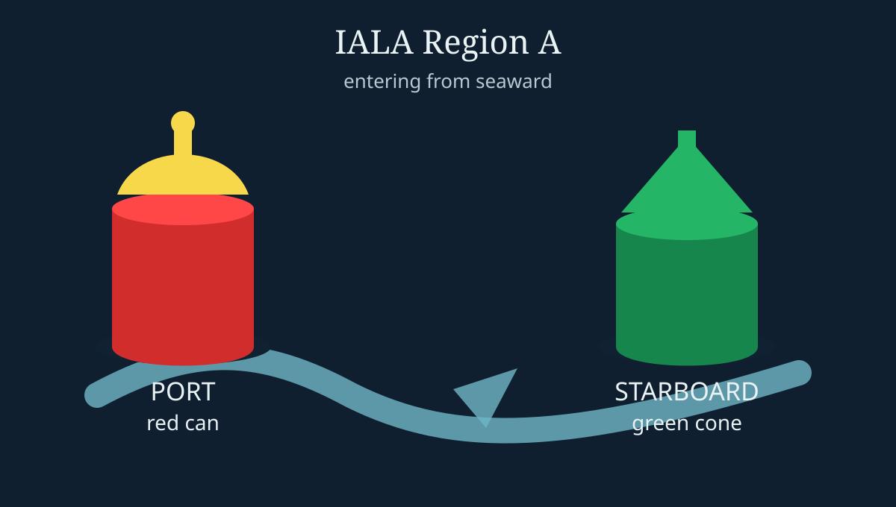

Chapter 8: 浮標點解要全球統一

紅同綠，唔係裝飾色
有啲規則，只有當你去到外地先知幾重要。浮標顏色就係其中一種。公開資料顯示，IALA Maritime Buoyage System 將世界分成 Region A 同 Region B；香港跟 Region A，即係由海入港時，port-hand mark 用紅色，starboard-hand mark 用綠色。美國等 Region B 地區就相反，所以「紅右綠左」唔係全球真理。
A7 最易錯，係考生記住顏色但唔記住方向。「紅色 can-shaped buoy」唔係永遠叫你向左或向右，佢要配合你係咪「由海入港」、水道方向、航向同位置。香港係 Region A，所以入港時紅色 port-hand mark 應留喺左舷，綠色 starboard-hand mark 留喺右舷。出港就視角相反。
點解要咁嚴謹？因為夜晚、大雨、繁忙航道入面，浮標係一種低成本但高可靠性嘅導航語言。顏色、形狀、頂標、燈質，每一樣都係縮短船長判斷時間。你唔需要見到整張海圖先可以作初步判斷；只要見到紅 can、綠 cone、isolated danger、safe water、cardinal mark，就已經知道自己要提高警覺同修正航線。
由故事學知識
→ A7 IALA — 香港係 Region A：入港方向紅在 port、綠在 starboard。記住「方向」先好記顏色。
→ 跳去 A7 詳細解釋Note: 易錯位 — 題目問「應該喺浮標邊一邊過」時，要先判斷航向同水道方向。
Sources
- Research sources: Marine Department/IALA references for Hong Kong Region A lateral marks; IALA maritime buoyage overview.
- Image: hand-drawn SVG icon in this build, based on IALA Region A red can / green cone conventions.